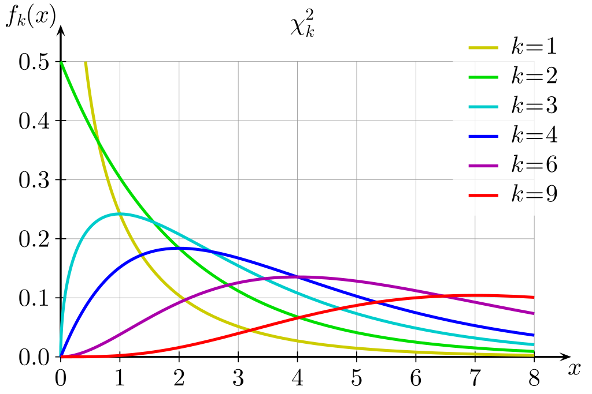
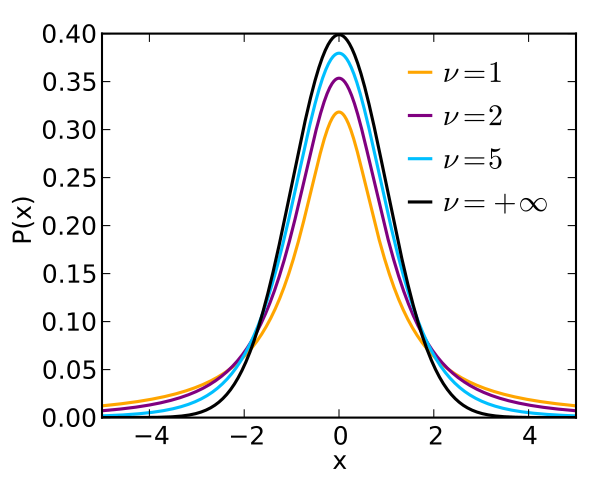

1 Random Variables
In this chapter, we will introduce the basics of statistics: random variables. We will discuss what a random variable is, how they can be described by distributions, and key properties and types of distributions.
1.1 Random Variables
A random variable has a set of potential outcomes \(\Omega\), called the sample space. For example, if we are flipping a coin, the potential outcomes are either heads or tails, so \(\Omega = \{H, T\}\). Only one outcome \(\omega\) can be realised from this random variable at a time.
There are two types of random variables: discrete and continuous random variables.
Discrete random variables have a set of finite, distinct potential outcomes \(\Omega\).
Rolling a die is a discrete random variable - you can only get outcomes 1, 2, 3, 4, 5, or 6. You cannot get outcome 3.5. There is only a discrete set of outcomes possible.
Flipping a coin is a discrete random variable - you can only get outcomes heads (1) or tails (0). You cannot get 1.5.
Continuous random variables are have an infinite number of outcomes \(\Omega\) within a range.
The random variable how long will it take for me to get to school tomorrow is conintuous The outcome could be 5 minutes, could be 6 minutes, and could also be 5.461 minutes.
Temperature is a random variable - it could be 5 degrees, 8 degrees, or 3.5738 degrees.
Every outcome \(\omega \in \Omega\) has some probability of being realised. For example, the probability of getting heads in a coin flip is 50%. We can express the probability of a certain outcome \(\omega\) with a probability density function (pdf).
Definition 1.1 (Probability Density Function) For a random variable \(Y\), the probability density function \(f_Y(y)\) gives us the probability of a certain value \(y\) will be the outcome:
\[ f_Y(y) = \P(Y = y) \]
For discrete variables, we just plug in the outcome \(y\) we want the probability of. For continuous random variables, while the PDF does give you the probability of outcome \(y\), this isn’t as useful in context.
For example, let us say the random variable of how long will it take for me to get to school tomorrow? Do we really care about the probability that it will take exactly 5.372 minutes? No. What we care about is a range.
Thus when calculating probabilities for continuous random variables, we find the probability that random variable \(Y\) is somewhere between values \(a\) and \(b\).
\[ \P(Y \in [a, b]) = \int\limits_a^bf_Y(y)dy \tag{1.1}\]
Another way to describe distributions is the cumulative distribution function (CDF). The CDF \(F_Y(y)\) finds the probability of an outcome equal or less to some value \(y\).
\[ F(y) = \P(Y≤y) = \ \underbrace{\sum\limits_{-∞}^y f_Y(y)}_{\text{discrete}} \ = \ \underbrace{\int\limits_{-∞}^yf_Y(y)dy}_{\text{continuous}} \tag{1.2}\]
1.2 Expectation and Moments
The expectation of a random variable \(Y\), notated \(\E Y\) or \(\mu_Y\), is a measure for the centre or average of a random value. As the name implies, if we randomly draw an outcome \(y\) from a random variable \(Y\), the average outcome that we get will be \(\E Y\).
Definition 1.2 (Expectation) For discrete random variables, the expectation is defined as the sum of every possible outcome \(y_t\) multiplied with their probability of occuring \(f_Y(y_t)\) (as given by the PDF):
\[ \E Y = \mu_Y = \sum\limits_t y_tf_Y(y_t) \]
For continuous random variables, the expectation is given by
\[ \E Y = \int\limits_{-∞}^∞y f_Y(y)dy \]
Expected values also can be manipulated algebraically, as they are considered linear. This will show up in many proofs:
Theorem 1.1 (Linearity of Expectations) Expectations are linear. This means that they can be added:
\[ \E (X+Y) = \E X + \E Y \]
And they can be multiplied with constants:
\[ \E(aX) = a \E X \]
The expectation of a constant is the constant itself:
\[ \E (a) = a \]
Expectations can be used to define the raw moments of a random variable (also called raw moment). The \(k\)th moment of a random variable is defined as
\[ \mu_k' = \E X^k \]
The first raw moment \(\mu'_1\) is the expected value of the random variable.
The central moment of an expected variable is defined as
\[ \bar\mu_k = \E[(X - \E X)^k] \tag{1.3}\]
1.3 Variance
While expectation measures the average/centre of a random variable, we might also want to know something about how spread out the outcomes of a random variable are.
Definition 1.3 (Variance) Variance is a measure of the spread of a random variable \(Y\), notated \(\V Y\) or \(\sigma^2_Y\). Mathematically speaking, it is the expected distance between each value of \(Y\) and \(\E Y\) squared:
\[ \V Y = \sigma^2_Y = \E [(Y - \E Y)^2] \]
Variance is also the second central moment \(\bar\mu_2\), as explained in eq. 1.3. Higher variance indicates a more spread out distribution, and lower variance indicates a less spread out distribution.
Variance also has a useful algebraic property that we will see in many proofs:
Theorem 1.2 (Algebraic Property of Variance) If \(c\) and \(b\) are constants, and \(X\) is a random variable, the following is true:
\[ \V(c + bX) = b^2 \V(X) \]
We can generalise this to linear algebra. If \(\b u\) is an \(n\)-dimensional vector of random variables, and \(\b c\) is a \(m\)-dimensional vector, and \(\b B\) is an \(m \times n\) matrix with fixed constants, then:
\[ \V(\b c+ \b{Bu}) = \b B \V(\b u) \b B^\top \]
Proof: From variance given in definition 1.3, we can expand \(\V(\b c + \b{BU})\) as follows:
\[ = \E \left[ (\b c + \b{Bu} - \E(\b c + \b{Bu})) (\b c + \b{Bu} - \E(\b c + \b{Bu}))^\top \right] \tag{1.4}\]
We know through the properties of expectation given in theorem 1.1, that the expectation of fixed constant vector \(\b c\) and fixed constant matrix \(\b B\) is themselves. Thus, we observe:
\[ \begin{align} \b c + \b{Bu} - \E(\b c + \b{Bu}) & = \b c + \b{Bu} - (\b c - \b B \E\b u) \\ & = \b c + \b{Bu} - \b c + \b B \E\b u \\ & = \b{Bu} + \b B \E \b u \\ & = \b B(\b u - \E \b u) \end{align} \tag{1.5}\]
Similarly, we can use the same properties as above, as well as the algebraic properties of matrix transposes, to observe:
\[ \begin{align} (\b c + \b{Bu} - \E(\b c + \b{Bu})^\top & = (\b B(\b u - \E \b u))^\top \\ & = (\b u - \E \b u)^\top \b B^\top \end{align} \tag{1.6}\]
Plugging in eq. 1.5 and eq. 1.6 into eq. 1.4, we get:
\[ \V(\b c + \b{Bu}) = \E[\b B(\b u - \E \b u)(\b u - \E \b u)^\top \b B^\top] \]
We know from theorem 1.1 that the expectation of a fixed constant matrix \(\b B\) is itself, so we can pull out \(\b B\) and \(\b B^\top\) from the expectation to get
\[ \V(\b c + \b{Bu}) = \b B \E[(\b u - \E \b u)(\b u - \E \b u)^\top ] \b B^\top \]
And by variance defined in definition 1.3, we can see that the expectation in the above equation is just \(\V (u)\), so we can substitute that in to get
\[ \V(\b c + \b{Bu}) = \b B \V (\b u) \b B^\top \]
Thus proving this theorem regarding variance.
1.4 The Normal Distribution
The normal distribution is a continuous random variable which has a probability density function.
Definition 1.4 (PDF of a Normal Distirbution) The PDF of a normal distribution is given by:
\[ f_Y(y) = \frac{1}{\sqrt{2\pi\sigma^2_Y}}e^{-\frac{1}{2\sigma^2}(y - \mu_Y)^2} \]
Where \(\mu_Y\) is the expected value of the distribution and \(\sigma^2\) is the variance.
We can see that the PDF \(f_Y\) is dependent on two parameters: the expected value \(\mu_Y\), and the variance \(\sigma^2_Y\). We often notate/define a normal distribution just by these parameters:
\[ Y \sim \mathcal N(\mu_Y, \sigma^2_Y) \tag{1.7}\]
Below illustrates how the PDF changes with different \(\mu_Y\) and \(\sigma^2_Y\) values:

The normal distribution can be altered algebraically while remaining a normal distribution.
- We can add a constant \(c\) to all outcomes \(\omega \in \Omega\) in our normal distribution \(Y \sim \mathcal N(\mu_Y, \sigma^2_Y)\), and obtain a new normal distribution \(Z \sim \mathcal N(\mu_Y + c, \ \sigma^2_Y)\).
- We can multiply a constant \(c\) to all outcomes \(\omega \in \Omega\) in our normal distribution \(Y \sim \mathcal N(\mu_Y, \sigma^2_Y)\), and obtain a new normal distribution \(Z \sim \mathcal N(c\mu_Y, (c\sigma_Y)^2)\).
Thus, with any normal distribution \(X\), we can manipulate them to obtain another normal distribution \(Z\) with a mean of 0 and a variance of 1. This process is called standardisation:
\[ \mathrm{if } \ X \sim \mathcal N(\mu_X, \sigma^2_X), \quad Z = \frac{X - \mu_X}{\sigma_X} \sim \mathcal N(0, 1) \tag{1.8}\]
This new normal distribution \(Z \sim \mathcal N(0, 1)\) is called the standard normal distribution. It is frequently used in statistics, so we have special symbols denoting its PDF, \(\varphi\):
\[ \varphi(z) = f_Z(z) = \frac{1}{\sqrt{2\pi}}e^{-\frac{1}{2}z^2} \tag{1.9}\]
We often also notate the CDF of a standard normal as \(\Phi(z) = F_Z(z)\).
1.5 Chi-Squared and T-Distribution
Let us say that we have \(p\) number of random variables \(Z_1, \dots, Z_p\), with all of these random variables being a standard normal \(Z_t \sim \mathcal N(0, 1)\). Now, the sum of their squares
\[ W = Z_1^2 + Z_2^2 + \dots + Z_p^2 = \sum\limits_{t=1}^pZ_t^2 \]
is distributed according the the chi-squared \(\chi^2\) distribution with \(p\) degrees of freedom:
\[ W \sim \chi^2_p \]
Degrees of freedom \(p\) is the only parameter of the chi-squared distribution, and determines its shape and PDF. The figure below shows how the PDF changes as we change \(p\) (notated \(k\) below):

Now, suppose two new random variables \(Z \sim \mathcal N(0, 1)\), and \(W \sim \chi^2_p\). Now the new random variable \(T\) defined as
\[ T = \frac{Z}{\sqrt{W/p}} \]
is distributed according to the t-distribution \(T \sim t_p\) with \(p\) degrees of freedom. The only parameter of the t-distribution is the degrees of freedom.
The shape of the t-distribution mirrors that of a standard normal distribution, but with slightly thicker tails and a smaller peak. As the degrees of freedom increases, the more and more the t-distribution mirrors a standard normal distribution. The PDF is illustrated below.

1.6 Bernoulli and Binomial Distribution
The Bernoulli distribution is a discrete binary random variable, with only two potential outcomes \(\Omega = \{0, 1\}\). Generally, we consider a value of 0 to be a failure, and a value of 1 to be a success.
The Bernoulli distribution only has one parameter, \(p\), the probability of a success. This also implies that the probability of a failure is \(1-p\). The PDF is
\[ f_Y(y) = \begin{cases}1-p & \text{if } y=0 \\ p & \text{if } y = 1\end{cases} \]
For example, flipping a coin can be a bernoulli distribution, if we consider heads to be a success and tails to be a failure. In this case, the probability of heads (success) is \(p = 0.5\).
The expected value of the bernoulli distribution can be calculated as seen in definition 1.2.
\[ \E Y = \sum\limits_t y_t f_Y(y_t) = 0(1-p) + 1(p) = p \tag{1.10}\]
And the variance of the bernoulli distribution is \(\V Y = p(1-p)\).
The bernoulli distribution is a special case of the binomial distribution. The binomial distribution measures the probability of every number of successes after \(n\) number of trials.
For example, if \(n=4\), that would mean that if we consider flipping heads to be a sucesss and flipped a coin 4 times, the binomial distribution would give us the probability of 1 heads, 2 heads, 3 heads, and 4 heads. The PDF of a binomial distribution is:
\[ f_Y(y) = \frac{n!}{y!(n-y)!}p^y(1-p)^{n-y} \]
We denote a binomial distribution as \(X \sim B(n, p)\), where \(n\) is the number of trials, and \(p\) is the probability of a success in any trial. This also implies that our Bernoulli distribution (which is just a \(n=1\) trial binomial distribution) can be defined as \(X \sim B(1, p)\).
1.7 Joint Distributions
Let us say we have two random variables \(X\) and \(Y\). What is the probability that we get both some value \(x\) and \(y\)? This probability is given by the joint probability density function.
Definition 1.5 (Joint Probability Density Function) The joint PDF \(f_{XY}\) gives us the probability that random variable \(X = x\) and \(Y = y\):
\[ \P(X =x,\ Y= y) = f_{XY}(x, y) \]
As in eq. 1.1 for continuous random variables, we are not interested in the probability of a specific outcome \(x\) or \(y\), but rather, the probability of a range of outcomes \(a ≤ X≤ b\) and \(c ≤ Y≤ d\). This is given by:
\[ \P(X \in [a,b], \ Y \in [c, d]) = \int\limits_a^b \int\limits_c^d f_{XY}(x,y)dy \ dx \]
If we are ever given only the joint probability distribution function \(f_{XY}\), and not the individual probability distribution functions \(f_X\) and \(f_Y\), we can still deduce the individual PDFs through the marginal distribution:
\[ f_X(x) = \int\limits_{-∞}^∞ f_{XY}(x,y)dy, \quad f_Y(y) = \int\limits_{-∞}^∞f_{XY}(x,y)dx \tag{1.11}\]
The discussion of multiple random variables leads to a discussion abou the relationship between two random variables.
Definition 1.6 (Independence) Two random variables \(X\) and \(Y\) are considered to be independent of each other \(X \ind Y\) if the realisation of \(X=x\) has no impact on the probabilities of \(Y= y\). If two random variables are independent, then
\[ \P(X = x, \ Y= y) = \P(X= x) \P(Y=y) \quad \text{if } X \ind Y \]
This implies that if \(X \ind Y\), then the joint PDFs is also the product of the two independent PDFs:
\[ f_{XY}(x, y) = f_X(x) f_Y(y) \]
We might not only care about the probabilities of a specific \(x\) and \(y\) in a joint distribution. We might also care about how two random variables are associated with each other - which can be measured by covariance or correlation.
Definition 1.7 (Covariance) Covariance is defined as
\[ Cov(X, Y) = \E[(X - \E X)(Y - \E Y) \]
Where positive covariance indicates a positive relationship, negative covariance indicates a negative relationship, and 0 covariance indicates no relationship (independence).
However, covariance is sensitive to measurement scale - i.e. if \(X\) was height, if we switched from metres to centimetres, our covariance would change values despite measuring the exact same concept.
Thus, correlation is a way to standardise and remove the effect of scale:
\[ Corr(X, Y) = \frac{Cov(X, Y)}{\sqrt{\V X \V Y}} \]
Since covariance and correlation measure the relationship/association between two variables, that implies that if \(Cov(X,Y) ≠ 0\), then \(X\) and \(Y\) are not independent, and if \(Cov(X, Y) = 0\), then \(X \ind Y\).
1.8 Conditional Distributions
Let us say we have two random variables \(X\) and \(Y\), however, \(X\) and \(Y\) are correlated, and not independent. This means that when \(X\) changes, \(Y\) changes as well.
What this implies is that knowing \(X\) will give us some more indication on the distribution of \(Y\) - after all, if they are positively correlated, as \(X\) increases in value, we should expect \(\E Y\) to also increase in value.
The conditional distribution of a random variable \(Y\) on \(X\), notated \(Y|X\), is the distribution of \(Y\), given a specific value \(x\) of \(X\). The conditional PDF is given by
\[ f_{Y|X}(y |x) = \frac{f_{XY}(x, y)}{f_X(x)} \tag{1.12}\]
We can also define the conditional distribution PDF in relation to the joint distributions:
\[ f_{XY}(x,y) = f_X(x)f_{Y|X}(y|x) = f_Y(y) f_{X|Y}(x|y) \tag{1.13}\]
Since conditional distirbutions are distributions, they have the same properties of normal distributions, and are able to be described by expectation and variance.
Definition 1.8 (Conditional Expectation) This conditional distribution also has some expected value \(\E(Y|X)\). This is called a conditional expectation, and is given by
\[ \E(Y|X=x) = \int\limits_{-∞}^∞ y f_{Y|X}(y|x)dy \]
The conditional expectation have a very interesting property, the law of iterated expectations, which will be used extensively for proofs later on.
Theorem 1.3 (The Law of Iterated Expectations) For any two random variables \(X\) and \(Y\),
\[ \E[\E(Y|X)] = \E(Y) \]
Proof: Let us start with the left side of the quation. Using definition 1.8, we can rewrite \(\E(Y|X)\), and plug into the left side to get
\[ \E[\E(Y|X)] = \E\left[ \int y f_{Y|X}(y|x)dy\right] \]
Using definition 1.2, we can rewrite \(\E(\cdot)\), and find
\[ = \int \left[ \int y f_{Y|X}(y|x)dy\right]f_X(x)dx \]
Using eq. 1.13 and the properties of integrals, we can rewrite the above as
\[ =\int\int yf_{XY}(x,y)dxdy \]
Now using the properties of integrals, we can get:
\[ =\int y \left[\int f_{XY}(x,y)dx\right]dy \]
And using marginal distributions from eq. 1.11, and the definition of expectation given in definition 1.2, we get
\[ = \int y f_Y(y)dy = \E Y \]
Thus, we have proven the law of iterated expectations.